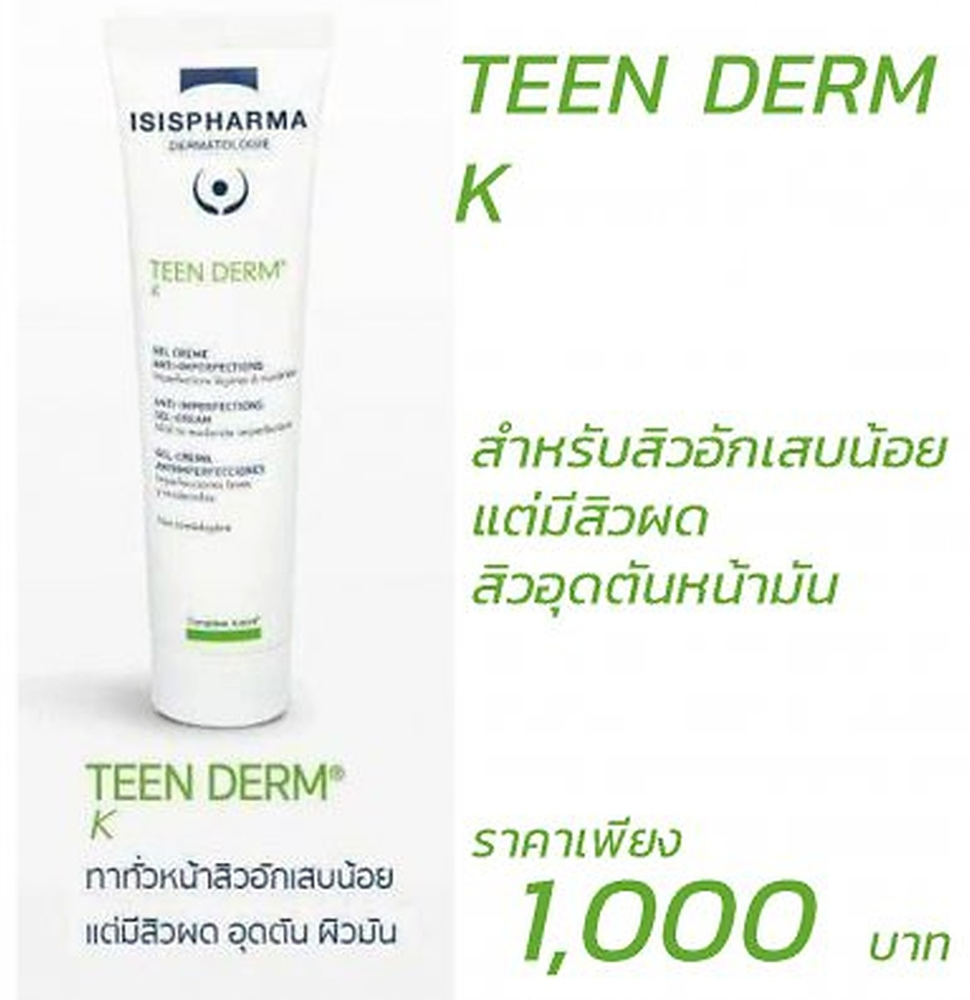
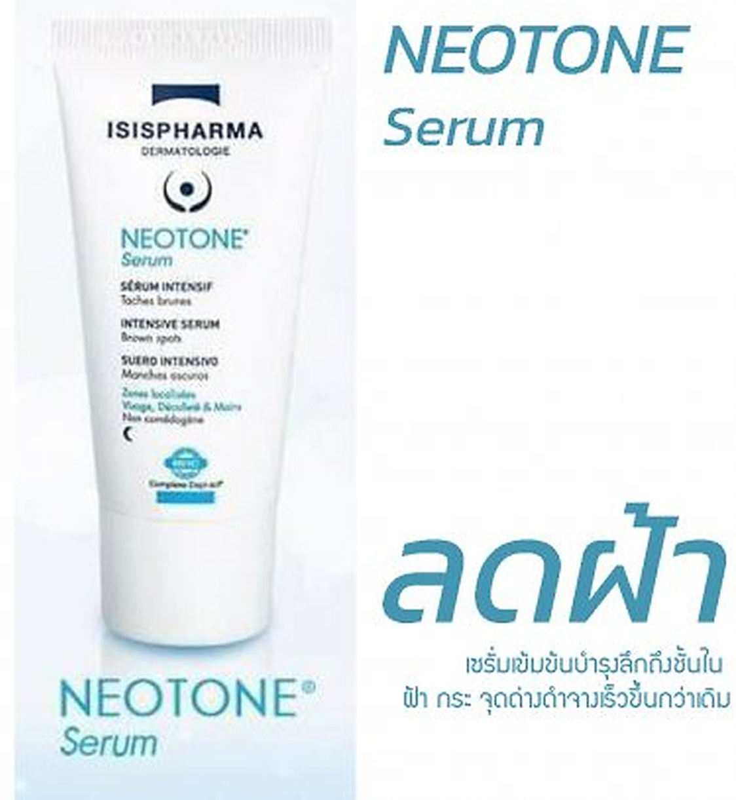
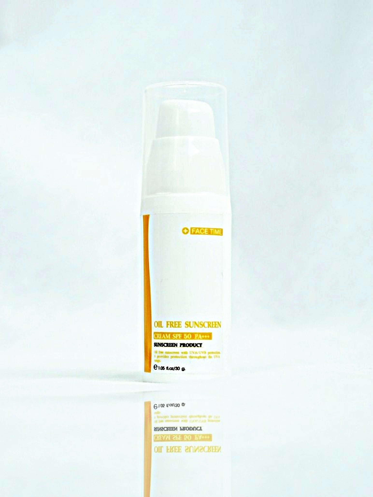

Facial Plastic & Reconstructive Surgery
ศัลยกรรมตกแต่ง
และเสริมสร้างใบหน้า
โดยแพทย์เฉพาะทาง
บริการให้คำปรึกษา ดูแล รักษา และผ่าตัด วิเคราะห์ปัญหาและปรับรูปหน้า ทั้งแบบผ่าตัดและไม่ผ่าตัด ตามมาตรฐานสากล โดยเน้นความปลอดภัยเป็นสำคัญ

- เสริมจมูก
- ทำตาสองชั้น
- ปากกระจับ
- ทำลักยิ้ม
- แก้หูกาง
- ฟิลเลอร์
- โบท็อก
- Fat Graft
Our Services
บริการของ FaceTime Clinic
เลือกดูรายละเอียดบริการที่สนใจ ทุกเคสได้รับการประเมินโดยแพทย์ก่อนการรักษา


เกี่ยวกับคลินิก
เฟสไทม์ คลินิก
คลินิกเฉพาะทางด้านใบหน้า
คลินิกเวชกรรมเฉพาะทาง ศัลยกรรมตกแต่ง และเสริมสร้างใบหน้า ให้คำแนะนำตามหลักวิชาการ ทั้งวิธีผ่าตัดและไม่ผ่าตัด ประเมินความเหมาะสมเป็นเคสต่อเคส และให้ความสำคัญกับความปลอดภัย
- ผ่าตัด — เสริมจมูก เสริมคาง ตาสองชั้น ปากกระจับ ลักยิ้ม
- ไม่ผ่าตัด — โบท็อก ฟิลเลอร์ ฉีดเติมไขมันใบหน้า
- รักษาตามมาตรฐานสากล โดยแพทย์ผู้เชี่ยวชาญที่มีประสบการณ์
อ่านเพิ่มเติมเกี่ยวกับศัลยกรรมใบหน้า
การศัลยกรรมเสริมความงามหรือศัลยกรรมตกแต่ง (Plastic Surgery) ปัจจุบันนิยมทำกันทั่วโลกทั้งชายหญิง เพราะการทำให้รูปร่างหน้าตาดูดีขึ้น ย่อมช่วยสร้างความมั่นใจให้กับคนได้ทุกเพศทุกวัย คนเราจะสวยดูดีและดูอ่อนกว่าวัยขึ้นได้ด้วยการปรับโครงสร้างใบหน้า และการลดเลือนริ้วรอย หรือลดความหย่อนคล้อยบนผิวหนัง ข้อบกพร่องเหล่านี้แก้ไขได้ด้วยการผ่าตัดศัลยกรรม ดังคำกล่าวที่ว่า “สวยด้วยมือหมอ” การทำศัลยกรรมเสริมสร้างใบหน้า (Facial Reconstructive Surgery) ยอดนิยมได้แก่ การเสริมจมูก (Rhinoplasty) ผ่าตัด ทำตาสองชั้น (Blepharoplasty) และ การผ่าตัดริมฝีปาก (Lips Surgery)
การเสริมจมูกทำได้ด้วยการใช้ซิลิโคน รองด้วยกระดูกหลังใบหู ตัดปีกจมูกหรือรองด้วยเนื้อเทียม ส่วนศัลยกรรมบริเวณใบหน้ารวมถึง การผ่าตัดยกกระชับใบหน้า (Face Lifting) การดึงหน้าส่วนบนคือขมับ (Temporal Brow Lifting) การดึงหน้าส่วนกลาง (แก้ม) การดึงหน้าส่วนล่าง คือบริเวณร่องน้ำหมากและ การดึงกระชับคอ (Neck Lifting) การเติมเต็มไขมันทั่วหน้าหรือเฉพาะจุดและ การผ่าตัดเสริมคาง (Mentoplasty) ทั้งนี้ในส่วนของการผ่าตัดตา นอกจากการทำตาสองชั้นเพื่อตกแต่งตาบนแล้ว ยังหมายถึงศัลยกรรมรอบดวงตา ตัดหนังตาส่วนเกิน เปิดหัวตา แก้ไขคิ้วตก และการผ่าตัดตาล่างกับถุงใต้ตาด้วย
อนึ่งการผ่าตัดริมฝีปาก ประกอบด้วยการตกแต่งริมฝีปาก ทำปากกระจับ ผ่าตัดยกมุมปากและ การทำลักยิ้ม (Dimple Reconstruction) นอกจากการผ่าตัดเสริมสร้างใบหน้าแล้ว ยังมีการศัลยกรรม ผ่าตัดบริเวณใบหู (Otoplasty) การแก้ใบหูกาง ตกแต่งใบหู การผ่าตัดก้อนที่หูหรือคีลอยด์ เป็นต้น
ปัจจุบันการทำศัลยกรรมเป็นที่ยอมรับมากขึ้นและไม่อันตรายอย่างที่หลายคนคิด แต่ผู้รับบริการศัลยกรรมก็ต้องคิดถึงความปลอดภัยของตัวเองเป็นหลัก เพราะในการผ่าตัดอาจเกิดผลข้างเคียงได้ เราจึงควรหาข้อมูลและศึกษารายละเอียดให้มากพอ โดยเลือกปรึกษาแพทย์ผู้เชี่ยวชาญที่มีใบประกอบวิชาชีพที่น่าเชื่อถือและมีประสบการณ์ ซึ่งจบจากสถาบันด้านศัลยศาสตร์ที่ได้รับการรับรองมาตรฐานสากล
How We Care
ดูแลดุจญาติมิตร
ตั้งแต่ปรึกษาจนถึงหลังผ่าตัด
ปรึกษาและประเมิน
พูดคุยถึงความต้องการและความเป็นไปได้ ให้ข้อมูลครบถ้วนอย่างตรงไปตรงมา
ออกแบบเฉพาะบุคคล
ออกแบบความงามให้เข้ากับโครงหน้าของแต่ละคน แบบเคสต่อเคส
รักษาตามมาตรฐาน
โดยแพทย์เฉพาะทาง ตามมาตรฐานสากล และเน้นความปลอดภัย
ติดตามผลโดยแพทย์
คุณหมอติดตามถามอาการหลังการรักษาด้วยตัวเองทุกราย

Meet the Doctor
พญ. วรยา ขัตติพัฒนาพงษ์
(หมอเหมียว)
แพทย์ผู้เชี่ยวชาญด้านโสต ศอ นาสิกวิทยา และอนุสาขาศัลยศาสตร์ตกแต่งและเสริมสร้างใบหน้า (Facial Plastic and Reconstructive Surgery) ผ่านการฝึกอบรมและมีประสบการณ์ทำงานด้านศัลยกรรมเสริมความงามกว่า 13 ปี
- แพทยศาสตรบัณฑิต มหาวิทยาลัยเชียงใหม่ (เกียรตินิยม)
- Diploma of Otolaryngology, มหาวิทยาลัยเชียงใหม่
- Diploma of Facial Plastic and Reconstructive Surgery, จุฬาลงกรณ์มหาวิทยาลัย
Skincare
ผลิตภัณฑ์ดูแลผิวจากคลินิก
ผลิตภัณฑ์ที่มีจำหน่ายผ่านคลินิก คัดสรรเพื่อดูแลปัญหาผิวเฉพาะจุด

TEEN DERM K
สำหรับสิวอุดตันและสิวอักเสบ ช่วยลดความมันบนใบหน้า
฿1,000
NEOTONE Serum
เซรั่มเข้มข้นบำรุงลึกถึงชั้นใน ช่วยดูแลปัญหาฝ้า กระ และจุดด่างดำ
฿1,590
Oil Free Sunscreen
ครีมกันแดดสำหรับผิวมัน พร้อม SPF50+ PA+++
฿490Free Consultation
ปรึกษาแพทย์ฟรี ไม่มีค่าใช้จ่าย
สอบถามข้อมูลหรือนัดหมายเข้ารับคำปรึกษาได้ทุกวันจันทร์ – เสาร์